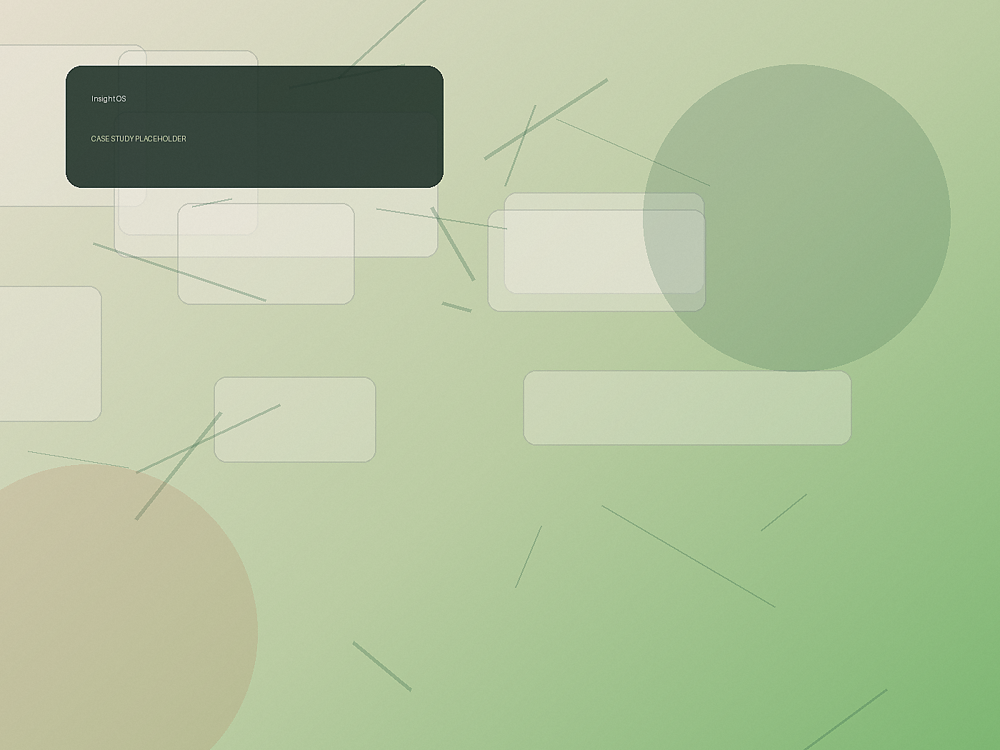

Product Designer / UX Strategist
Lin Chen
把模糊想法，设计成可被使用、被记住的产品体验。关注产品策略、体验设计、原型验证与设计系统。
6+
年产品体验
24
个项目交付
4
个行业场景
Selected Work
精选项目
以下内容是占位案例，后续可以替换为你的真实项目、成果数据和作品链接。
Capabilities
我能把问题拆清楚，也能把界面推到细节里。
产品策略
梳理用户、场景、商业约束和优先级，让设计决策有明确方向。
体验设计
从信息架构到关键路径，设计稳定、清晰、有节奏的端到端体验。
原型验证
用可交互原型快速验证假设，减少团队在模糊阶段的反复成本。
设计系统
建立组件、规范和协作方式，让产品在增长后仍保持一致与效率。
About
好的产品不是被装饰出来的，而是被不断澄清出来的。
过去几年，我参与过从 0 到 1 的产品探索、成熟业务改版和跨端设计系统建设。我的工作方式偏向结构化：先理解真实问题，再定义可验证的设计假设，最后把方案推进到能交付的细节。
Figma
Notion
Framer
Webflow
FigJam
2024 - Now
Senior Product Designer
负责数据产品体验升级和设计系统落地。
2021 - 2024
UX Designer
参与多个移动端与后台产品的研究、原型和视觉设计。
Before
Product Intern / Visual Designer
从品牌视觉与运营设计进入产品体验领域。
Contact